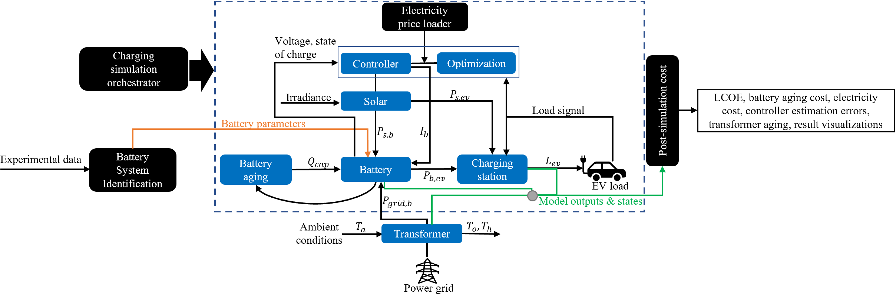
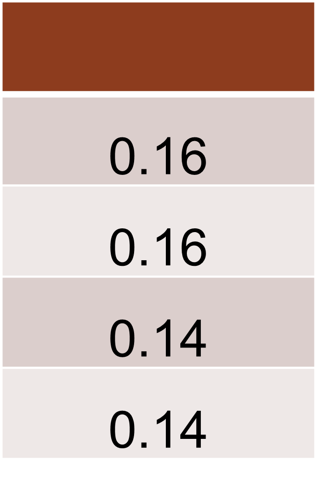

EV-Ecosim platform
A grid-aware co-simulation platform for the design and optimization of electric vehicle charging stations. Link to preprint
Requirements
HiPAS GridLAB-D installation (master branch): GridLAB-D. This GridLAB-D version is required for the python co-simulation functionality with the power systems network. Recommended use with AWS EC2 SLAC GiSMo HiPAS GridLAB-D AMI (beauharnois-X).
Folder descriptions
The contents of each folder within the repository are described below.
ambient_data
Hosts ambient temperature data for capturing the effects of environmental conditions on subsystems, such as battery, transformers, charging stations.
base_load_data
Includes existing base case building/home load (usually uncontrollable) within the distribution grid. This work uses proprietary Pecan Street Data. Below is an exmaple data prototype for the base load data. Note that column fields are case-sensitive. The data used in the original paper has a minute resolution, as is the power system simulation.

batt_sys_identification
Battery system identification module. Hosts the class for generating battery system identification parameters
from experimental data. This module leverages a genetic algorithm to optimize the battery model parameters.
The battery model is a 2nd order RC Equivalent circuit model (ECM). One can this module to generate custom NMC
battery parameters by uploading experimental data to the batt_sys_identification/data folder and running the module.
The module will generate a .csv file with the battery parameters in the batt_sys_identification/params folder.
The data prototype is shown below. Note that column fields are case-sensitive.

The module will save a new .csv file with an additional field for the corrected open circuit voltage (OCV) values;
this field (column) will be labelled ocv_corr within the new battery data csv, including the existing columns as shown
in the data prototype above.
Once the battery parameters are generated, they can be used in the battery_data folder and configs/battery.json can
be modified so the model runs using the new custom parameters.
charging_sim
This contains the configs folder which includes the configuration files for all the relevant modules, such as battery,
battery aging, solar modules, etc. It encompasses the implementation of the physical modules, including:
battery.py- Battery cell module.batterypack.py- Battery pack module.batteryAgingSim.py- Battery aging module.controller.py- Controller module.chargingStation.py- Charging station module.electricityPrices.py- Electricity prices module.optimization.py- Optimization module.orchestrator.py- Simulation orchestrator module.solar.py- Solar PV module.utils.py- Hosts utility functions used by some modules.simulate.py- Offline DER control optimization for cost minimization (this is run for offline mode (no state feedback)).
DLMODELS
This includes legacy load forecasts models developed (not needed).
elec_rates
Includes .csv files for electricity Time-of-use (TOU) rates. The input data prototype for electricity rates is shown below. User must upload a normal full-year sized data (for 365 days) to avoid any errors.
The data required must be in the format shown above. The electricityPrices.py module will read the data and sample
prices during optimization and simulation. The data should be one full year of TOU rate prices at 15 minute resolution.
The electricityPrices.py module can also help with downscaling the data to 15 minute resolution if the data is at a
much coarser resolution. The module will save the downscaled data in the elec_rates folder.
feeders
Library of IEEE test feeders and PNNL taxonomy feeders for distribution systems in the GridLAB-D .glm format.
IEEE feeders have spot loads specified at primary distribution level. PNNL taxonomy feeders have spot loads specified at
primary or secondary distribution level.
feeder_population
Scripts for populating base feeder models with time-varying loads and resources using the load data in base_load_data.
feeder_population.py generates the necessary files for a co-simulation run based on the parameters specified in
feeder_population/config.txt. This module uses the
Requires residential load data not included in repo (limited access).
solar_data
Includes solar irradiance data for capturing the effects of environmental conditions on overall system cost. Default data for solar irradiance is from the National Solar Radiation Database (NSRDB) for the San Francisco Bay Area. The data prototype is from the National Renewable Energy Laboratory (NREL) and is shown below. Note that column fields are case-sensitive.

Month labels are indexed from 1 to 12, inclusive; 1 - January, 12 - December. The original data is in hourly resolution. The EV-Ecosim data prototype is in 15 minute intervals by default, with irradiance oversampled 4 times from hourly dataset. The GHI represents the “Global Horizontal Irradiance” in W/m^2, which is the total amount of shortwave radiation received from above by a surface horizontal to the ground.
test_cases
This folder contains the test cases for the co-simulation platform. The test cases are organized into folders based on the type of simulation. The test cases are described below.
base_case- Reads voltage from GridLAB-D and writes power injections at each timestep (no EV charging or DER).
rlsf - base_case plus implements a recursive least squares filter to estimate network model online (not used)
battery - base_case plus transformer thermal model plus DER integration (included battery and solar).
transformer - base_case plus simulation of transformer thermal model for each transformer in GridLAB-D model (not used).
analysis
Scripts for plotting and analysis of co-simulation results. Includes post optimization and simulation cost calculation modules and voltage impacts on the distribution grid.
plot_results.py - This module is used post-simulation to parse the voltages from the power-simulation to calculate the percentage
voltage violations per ANSI C84.1. The file also generates voltage distribution plots. A user can modify the
SIMULATION_FOLDER variable which is the string of the path where the powerflow simulation output voltages at each node
exist.
load_post_opt_costs.py - This module is calculates the levelized cost of energy and populates into tables/cost matrices, which are saved in the
respective files and folders. The module also generates plots for the cost analysis.
cost_analysis.py - This module contains the CostEstimator class, which estimates the cost of the different grid and DER components
from the simulation.
How to run
Create a new environment using conda env create --name <your env name> -f environment.ymlOR
install packages listed in the environment manually (RECOMMENDED)
Ensure gridlabd is installed by following recommended installation method.
For battery test case:
Navigate to
test_cases/battery/feeder_populationand runfeeder_population.py. This uses thetest_cases/battery/feeder_population/config.txtsettings to prepare the power system and populate the secondary distribution network with time-varying base loads, EV charging stations, with the required transformers.Once confirmed that
feeder_population.pyhas run successfully and generates the requiredIEEE123_secondary.glmandIEEE123_populated.glmfiles, you are done with the initial pre-simulation run prep.Now navigate one level of out
/feeder_populationand run scenarios.py usingpython3 scenarios.py
For base case:
Navigate to
EV50_cosimulation/feeder_populationand runfeeder_population.py. This uses the./feeder_population/config.txtsettings to prepare the power system and populate the secondary distribution network
with time-varying base loadsNavigate to
test_cases/base_caseand run master_sim.py usingpython3 master_sim.py
Post-simulation analysis
This is done with the modules in the
analysisfolder. Please see theanalysisfolder section for more details.